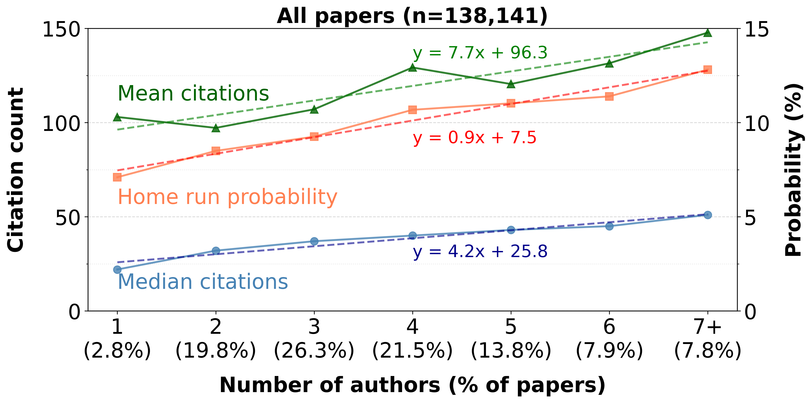
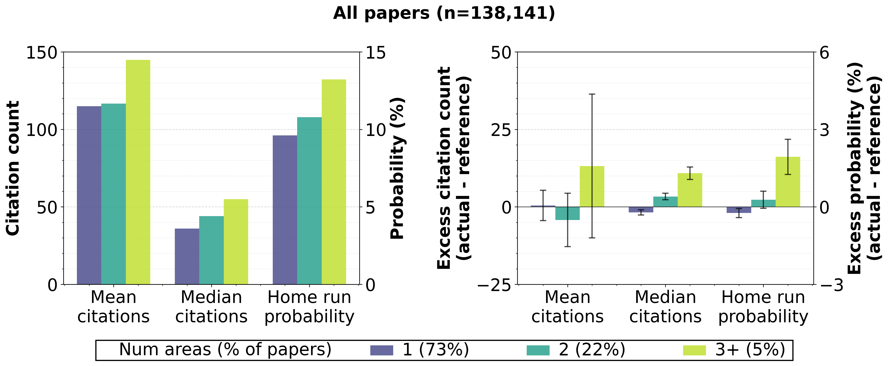
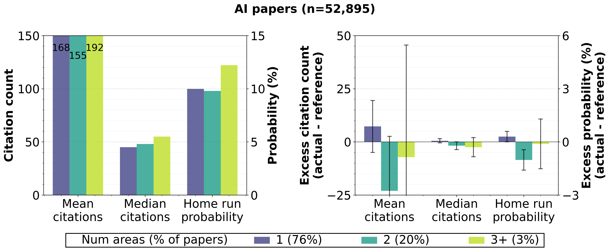
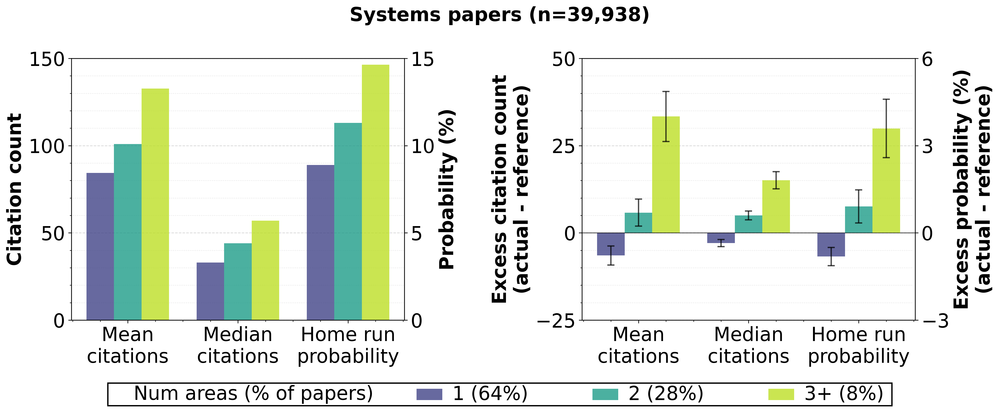
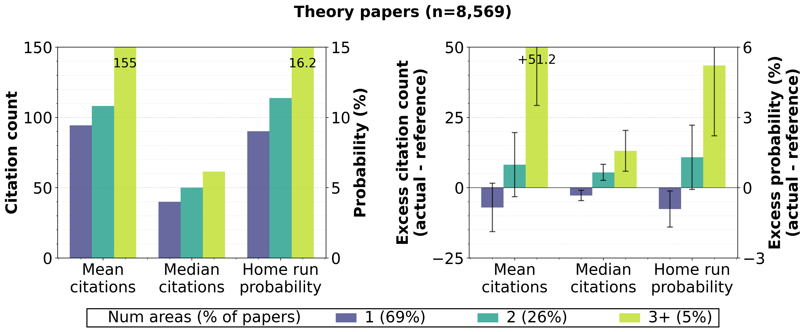
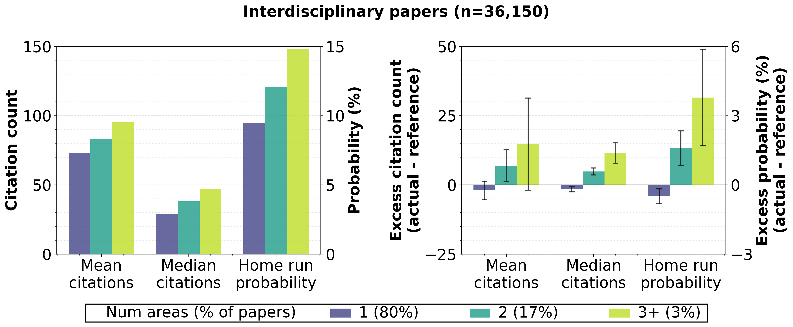

November 21, 2025
In research circles, collaboration is assumed to be an unadulterated good, the more the better. Processes and entire buildings are designed with the explicit purpose of encouraging collaboration, especially collaboration with researchers with different expertise. As much as I love to work with other smart people, the accompanying coordination overhead and communication frustrations make me wonder if collaboration is worth it and if its value can be objectively shown. So, over the last weekend (OK, two), I decided to crunch some numbers for fun. I've wanted to do this for a long time, and since modern coding agents make it so easy to do these things, I ran out of excuses. Read on to find out when and how much collaboration pays off.
I wanted to study the relationship between collaboration, especially across different areas of study within computer science, and the quality of the resulting research. But good research is notoriously difficult to define, especially at scale. While a researcher may be able to classify a paper as good (or bad) after careful consideration, it's hard for them to do so for thousands of papers that are published each year and it's even harder for any large group of researchers to agree on the classification. Thus, despite its limitations, I use citation count as a proxy measure of quality, with the expectation that good research tends to be cited more.
I crunched the numbers as follows:
- Started with 239,877 papers from DBLP published from 2000-2020. I did not analyze recent papers to account for the delayed citation effect in interdisciplinary research.
- Filtered to 140,166 papers (58%) published in CSRankings venues with CSRankings authors, allowing me to map a paper to its area and map its authors to their areas.
- Pulled citation data for 138,141 papers (98%) via Semantic Scholar.
The graph below plots how the mean and median number of citations varies with the number of authors. It also plots the "home run" probability, which is the fraction of papers in the top 10% by citation count. This measure answers the question: Are collaborative papers (with more authors) more likely to be home runs? It also compensates for some confounding effects of using citations metrics (e.g., self-citations are unlikely to turn an average paper into a home run paper).

Figure 1: There is a clear relationship between the number of authors and citations. For each additional collaborator, the mean citation count increases by ~7 and the median by ~4.
While each additional collaborator increases citations and home run probability, I didn't expect the value they bring to be this low. In my experience, research gets much better with collaborators. Perhaps it is not just the collaboration that matters, but collaborating with folks who know something that you don't, that is, folks outside of your area.
So let's analyze citations as a function of the number of primary areas of authors. Areas are fields of study like vision, networking, and algorithms; CSRankings identifies 27 distinct areas. The primary area of an author is based on the venue in which they've published the most papers. This analysis excluded authors not in the CSRankings database, which to a first order implies ignoring non-faculty authors and non-CS faculty.
The graphs below show how citation metrics change as the number of areas in the paper's authorship change. The left plot is the raw metrics in the data. The right plot decouples the impact of more authors versus multiple areas—since more authors lead to more citations, as we saw above, the improvement in citations for multi-area papers could simply stem from having more authors in general. Here's how I controlled for that. For each paper set (1-area papers, 2-area papers, 3+-area papers), I created a "reference bundle" by sampling papers from the entire dataset that matched the author count distribution. If 2-area papers have 10 more citations than their reference bundle, that's a cross-area effect. The graph shows this difference, averaged over 100 random samples, with 95% confidence intervals. (As an aside, note that roughly 3 in 4 CS papers are single-area.)

Figure 2: Cross-area collaboration, aggregated across all areas of CS, has limited impact. Going from 1 to 2 areas barely changes the mean citation count (left graph), and a statistically significant advantage of multi-area papers emerges only with 3+ areas (right graph).
The data shows a rather limited impact of cross-area collaboration, which surprised me even more. To dig deeper, I repeated this analysis for the four area groups defined by CSRankings: (1) AI, with areas like vision and ML; (2) systems, with areas like networking and PL; (3) theory, with areas like algorithms and cryptography; and (4) interdisciplinary, with areas like computational biology and HCI. The results:




Figure 3: AI is unlike the other three area groups. It shows no value for cross-area collaboration, while others show gain across all citation metrics.
Aha! These graphs explain the disconnect between the earlier result, which aggregated all areas, and my experience as a systems researcher. AI, which represents about 40% of the papers, sees almost no improvement in citations because of cross-area collaboration. If anything, mean citations and home run probability actually go down when going from 1-area papers to 2-area papers.
This lack of benefit occurs despite significant benefit from more authors—the bump in mean citations is ~21 per additional author (i.e., 3x more than the per-author increase that we saw in Figure 1 across all areas). Thus, it is cross-area collaboration that is not panning out. One possible explanation, suggested by Todd Millstein, is that because the field of AI is moving fast, cross-area papers, which tend to study problems or methods that are not mainstream, have trouble standing out.
Systems and other area groups have a different behavior and show a significant positive impact of cross-area collaboration. In systems, if you replace two of your intra-area collaborators with cross-area collaborators, to make it a 3+-area paper, your paper is expected to get 25-40 more citations. This bump is worth 3-5 extra collaborators, given the ~7 mean citation bump per additional author. Cross-area collaboration also increases your chances of writing a home run paper by 30% in relative terms, going from a baseline of 11.2% to around 14.6% (which is the 3.4% excess probability in the graph). I know, I know, correlation is not causation, but it's catchier to phrase it like this.
If you are an AI researcher, you might want to stop talking to researchers outside your area. Others should collaborate more and collaborate often across areas.
This analysis would not have been possible without the great work of folks behind CSRankings, DBLP, and Semantic Scholar. I am also grateful to Dan Halperin and Todd Millstein for feedback on this article.
All the scripts that generated the plots above are on GitHub.
In addition to curiosity, I did this analysis so I could play more with coding agents. I used Amazon Kiro with Claude Sonnet 4.5. I set two constraints for myself at the start: (1) Do not directly edit the code, no matter how small a change I wanted to make—instead use the chat interface to specify what I want, and (2) Do not even read the code—instead judge correctness and infer behavior by inspecting the code's output (data, graphs) and asking questions via the chat interface. I succeeded with the first goal completely, but only partially with the second. There were a few times when data inspection and chat interface were not sufficient or felt too onerous.
Why am I telling you this? So you don't judge me by the quality of the code.